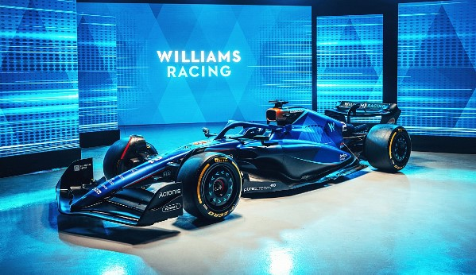
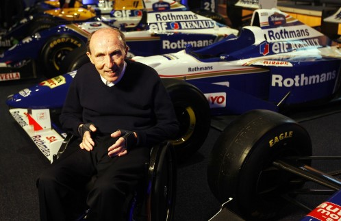
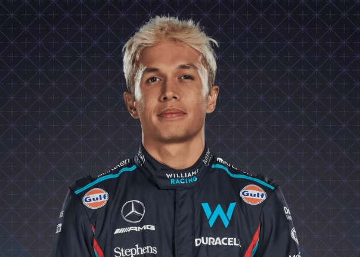
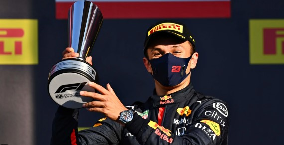
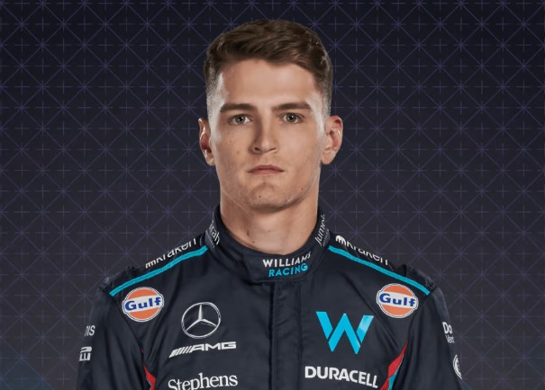
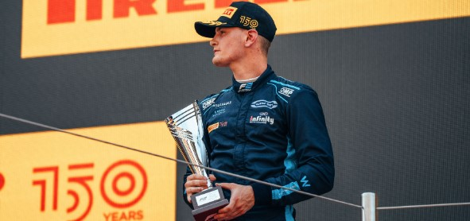
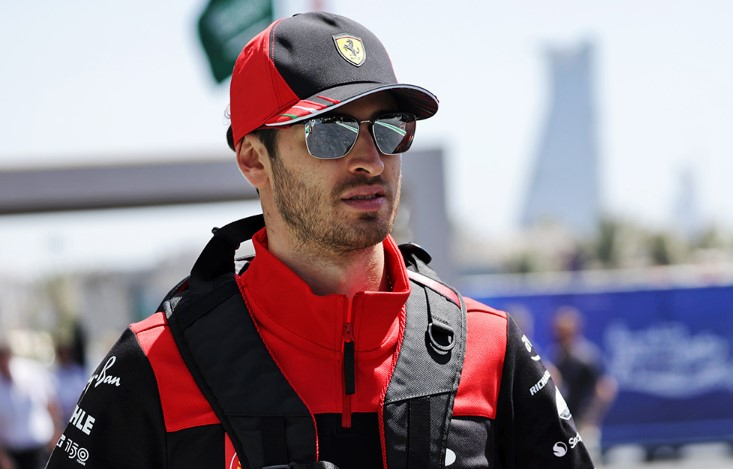
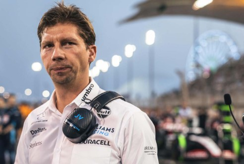
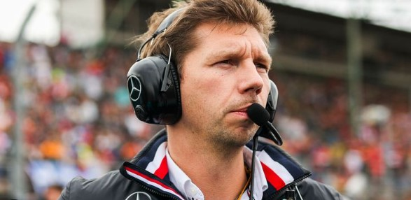

Williams Racing
 - Base: Grove, United Kingdom
- Team Chief:James Vowles
- Technical Chief: David Worner
- Chassis:FW45
- Power Unit: Mercedes
- First Team Entry: 1978
- World Championships: 9
- Highest Race Finish: 1st
- Pole Positions: 128
- Fastest Laps: 133
Williams Grand Prix Engineering Limited, currently racing in Formula One as Williams Racing, is a British Formula One team and constructor. It was founded by Frank Williams (1942–2021) and Patrick Head. The team was formed in 1977 after Frank Williams' earlier unsuccessful F1 operation: Frank Williams Racing Cars (which later became Wolf–Williams Racing in 1976). The team is based in Grove, Oxfordshire, on a 60-acre (24 ha) site. The team's first race was the 1977 Spanish Grand Prix, where the new team ran a March chassis for Patrick Nève. Williams started manufacturing its own cars the following year, and Clay Regazzoni won Williams' first race at the 1979 British Grand Prix
Race Drivers:
- Alexander Albon:  
- Logan Sargeant:  
A Thai and British racing driver currently competing in Formula One for Williams Racing, under the Thai flag. Albon previously raced in Formula One for Scuderia Toro Rosso and Red Bull Racing and in DTM for AF Corse.After becoming part of the Red Bull Junior Team in 2012, he was promoted to open-wheel cars for the 2012 Eurocup Formula Renault 2.0 season. He spent three years in the series and finished third in the 2014 championship.
Logan Hunter Sargeant (born December 31, 2000) is an American racing driver who competes in Formula One for Williams Racing. He previously competed in the 2022 FIA Formula 2 Championship driving for Carlin Motorsport, finishing fourth overall in the standings.
Reserve Driver:
- ANTONIO GIOVINAZZI : 

Antonio Giovinazzi retains his role as Ferrari reserve driver, which he’s held since he was dropped from Alfa Romeo in 2021. As part of his agreement, he is also on hand for Alfa Romeo and Haas.He appeared for the latter in a couple of free practice sessions, which led to speculation of a full-time seat at Haas for 2023 before the vacancy went to Nico Hulkenberg.
Team principal:
- James Vowles:  
James Vowles (born 20 June 1979) is a British motorsport engineer and Team Principal of Williams Racing. Before joining Williams, he was the motorsport strategy director at Mercedes-AMG Petronas Formula One Team.[2][3] He was also responsible for the Brawn GP race strategy, which was critical to the team's championship-winning 2009 season. He has worked in Formula One for over 20 years and has played a key role in nine Constructors' Championships, eight Drivers' Championships and over 100 Grands Prix. He has worked under the leadership of team principals David Richards, Ross Brawn, and Toto Wolff during his career.